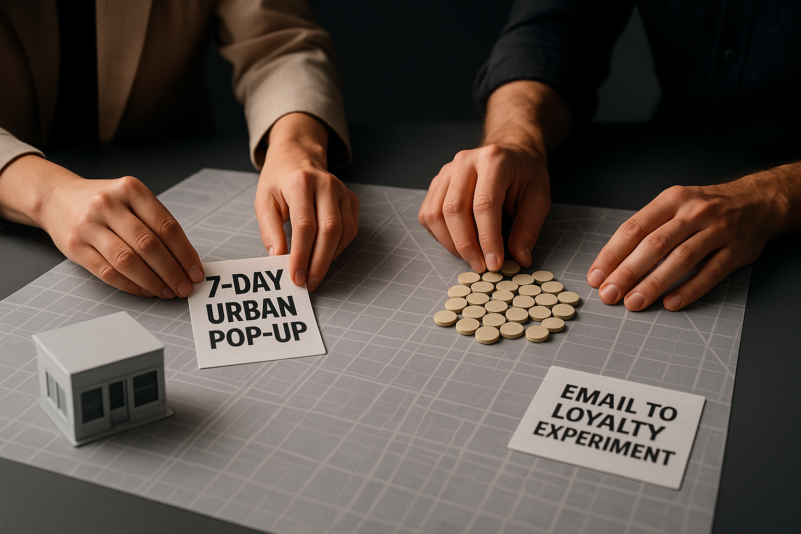
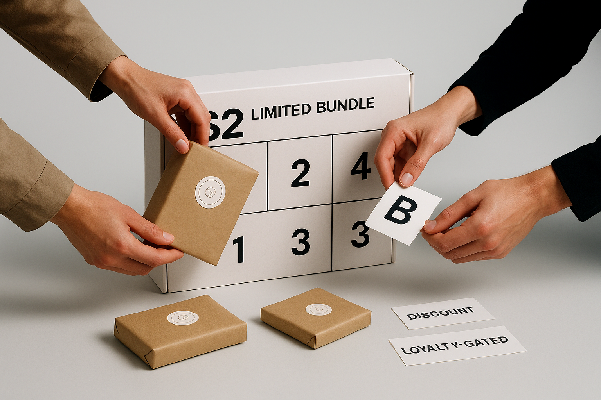
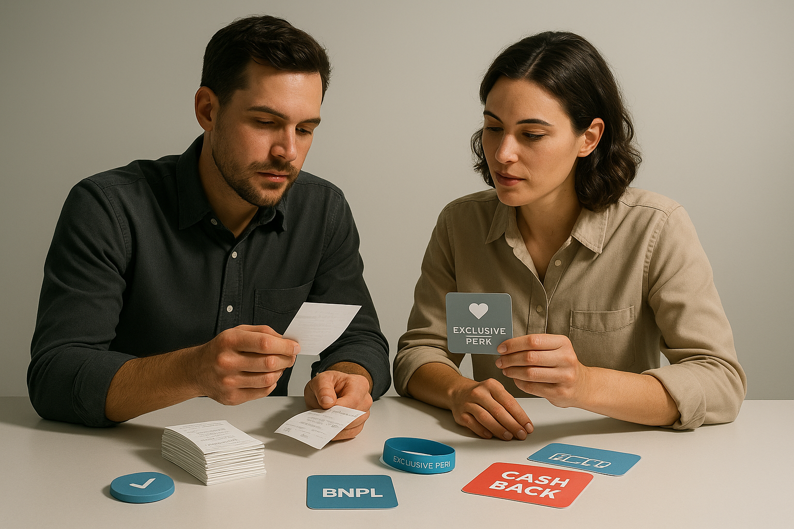

Image generated with OpenAI gpt-image-1-mini
Read This First
Why this window is investable
- Unified targets: **10–15%** footfall lift (stretch **≥25%**), **20–30%** early-window share, CPA ≤**0.80×**, QR redemption ≥**5%** of visitors.
- Measurement window: instrument door counts, QR→POS attribution and an 8-week post-event analysis to separate one-time visits from repeat value.
Targets
- Footfall uplift: design to detect 10–15% (stretch ≥25%)
- Early-window share: move from 12–15% baseline to 20–30% of transactions
- Event CPA ≤0.80× baseline with QR redemption ≥5% within the window
Activation Plays
Urban mini-burst pop-up (7-day holiday test)
Brand to run a 7-day urban pop-up from Nov 20–26 measuring email-to-loyalty conversion rate and incremental store visits versus baseline over an 8-week post-event window.
Owner: Head of Retail Operations · Partner: Brand / Local Events Team · Timing: pilot
Operator playbook and outreach cadence
Thresholds: {'primary_success': 'Event CPA ≤ 0.8x baseline AND redemption ≥ 15% (mini-burst guardrail).', 'measurement_window': 'Incremental store visits and email-to-loyalty conversion measured vs. baseline over an 8-week post-event period.'}
Placement options: Flagship window · Downtown kiosk · Civic pop-up (mall or plaza)
Prerequisites: Local permits and short-term retail insurance · POS or mobile checkout and loyalty sign-up integration · Email segmentation and UTM tracking · Staffing plan and on-site training · Daily footfall and conversion attribution plan
Fit: Brands with local retail capacity looking to rapidly test whether in-person urgency converts email traffic into durable loyalty sign-ups and incremental visits. · Not for: Operators without the ability to instrument store-level attribution or to staff a short-term retail build-out.
Persona: Retail Events Manager · Collab: brand↔store · Zero new SKUs: Yes · Ops drag: high
Target map:
- Head of Retail Operations (DTC Brand): Pre-holiday concentrated window to validate in-person urgency converts email traffic to loyalty members.
- CRM Manager (Marketing/CRM): Immediate opportunity to drive high-intent email audience into loyalty within a compressible test window.
- District/Store Manager (Store Network): Test staffing and local merchandising to spot high-value days in holiday surge.
Outreach cadence:
- Day Day 0 — Pop-up opens — VIP email invite: Announce the pop-up to segmented email list highlighting exclusive in-person perks tied to loyalty sign-up. (CTA: Send 1-page runbook to merchandising, store ops, and finance)
- Day Day 3 — Local social + SMS push: Drive FOMO with local social posts and SMS showing live footfall and limited inventory calls-to-action. (CTA: Book 30-minute readout with finance and ops to review guardrails)
- Day Day 14 — Post-event conversion and nurture: Follow up attendees and nearby subscribers with outcome-driven messaging (what they missed + online redemption for members). (CTA: Deliver scale/kill decision memo to executive sponsor)
Limited-edition calendar-style bundle A/B acquisition test (Dec 1–24)
Brand to launch a limited-edition, calendar-style bundle during Dec 1–24 and A/B test two acquisition hooks (discounted bundle vs. loyalty-gated bundle), measuring new-customer rate and cost-per-loyalty-signup within 8 weeks.
Owner: Head of Product / Merchandising · Partner: Creative Studio & CRM Acquisition Team · Timing: 6-week
Operator playbook and outreach cadence
Thresholds: {'acquisition_success': 'New-customer rate increases while cost-per-loyalty-signup ≤ acceptable acquisition CPA; staged discount success if margin per order ≥ baseline minus 100 bps and 90-day repeat ≥ baseline.', 'measurement_window': 'New-customer rate and cost-per-loyalty-signup measured over an 8-week post-campaign window.'}
Placement options: E‑commerce homepage and product detail pages · Email calendar drops and owned social
Prerequisites: E‑commerce bundling capability and SKU mapping · A/B testing infrastructure and tracking · Loyalty gating mechanics and offer code support · Inventory allocation and fulfillment plan
Fit: Brands looking to test scarcity-driven bundle formats and compare direct discount vs. loyalty-gated acquisition hooks during the holiday calendar. · Not for: Operators without bundling capability, A/B test infrastructure, or the ability to track new-customer attribution post-purchase.
Persona: Product Marketing Manager · Collab: brand↔studio · Zero new SKUs: No · Ops drag: medium
Target map:
- Head of Product (DTC Brand): Holiday period with calendar mechanics exposes whether scarcity-driven bundles attract net-new customers.
- Acquisition Lead (Acquisition/CRM): Need to compare discounted vs. loyalty-gated hooks for efficient customer acquisition ahead of year-end planning.
- Revenue/Finance Analyst (Finance): Require margin and repeat-purchase guardrails to protect unit economics from limited-time bundle offers.
Outreach cadence:
- Day Day -14 — Creative and test setup: Deliver creative variants and configure A/B test across channels with tracking and segment definitions. (CTA: Send 1-page runbook to merchandising, store ops, and finance)
- Day Day 0 — Bundle launch — A/B email and homepage: Deploy split-test: discounted bundle vs. loyalty-gated bundle to matched audiences; monitor early signals. (CTA: Book 30-minute readout with finance and ops to review guardrails)
- Day Day 21 — Mid-campaign read and reallocation: Analyze new-customer rate and cost-per-loyalty-signup; shift budget to winning acquisition hook while preserving margin guardrails. (CTA: Deliver scale/kill decision memo to executive sponsor)
BNPL + cash-back promotion pilot (4-week holiday window)
Brand to pilot a BNPL + cash-back-app promotion during a 4-week holiday window (e.g., Nov 22–Dec 20) and measure percent of transactions using BNPL, average order value (AOV), and effective discount dollars saved versus a standard percent-off control within 8 weeks.
Owner: Head of Payments / Finance · Partner: Payments Partner & Growth · Timing: pilot
Operator playbook and outreach cadence
Thresholds: {'adoption_metrics': 'Percent of transactions using BNPL and AOV uplift vs. baseline measured over pilot.', 'economics_guardrail': 'Compare effective discount dollars saved against standard percent-off control; staged discount success if margin per order ≥ baseline minus 100 bps.'}
Placement options: Online checkout flow · In-store POS activation (if POS supports BNPL)
Prerequisites: BNPL and cash-back partner contracts and sandbox · Checkout and POS integration support · Analytics to measure BNPL take-rate, AOV, and effective discount dollars · Legal review of promotional terms
Fit: Operators with digital checkout flexibility who want to test payment incentives for AOV and conversion lift versus traditional discounts. · Not for: Operators that cannot integrate third-party payment partners or who lack granular checkout analytics.
Persona: Payments Operations Lead · Collab: brand↔payments · Zero new SKUs: Yes · Ops drag: medium
Additional variants:
- Replace weekend sitewide promo with exclusive early-access + loyalty trial (10-day test) — Retailer/Brand to replace a weekend 20% sitewide promo with an exclusive pop-up perk (early access + loyalty trial) during a 10-day test window (e.g., Nov 20–29) and track loyalty enrollments per 1,000 visitors and 30-day repeat purchase rate. — pilot
- Email-to-loyalty conversion instrumentation sprint — Brand to run a 7-day urban pop-up from Nov 20–26 measuring email-to-loyalty conversion rate and incremental store visits versus baseline over an 8-week post-event window. — immediate
- Creative kit for in-person holiday activations — Brand to run a 7-day urban pop-up from Nov 20–26 measuring email-to-loyalty conversion rate and incremental store visits versus baseline over an 8-week post-event window. — immediate
- Staff-driven loyalty trial & incentive during activations — Retailer/Brand to replace a weekend 20% sitewide promo with an exclusive pop-up perk (early access + loyalty trial) during a 10-day test window (e.g., Nov 20–29) and track loyalty enrollments per 1,000 visitors and 30-day repeat purchase rate. — pilot
Target map:
- Head of Payments (Ecommerce Brand): Holiday demand and higher AOV potential provide a strong signal period to test alternative payment mechanics.
- Growth/Product Manager (Growth): Opportunity to measure behavioral lift (AOV) vs. cost of promotion relative to percent-off controls.
- Revenue Analyst (Finance/Operations): Immediate need to understand margin impact and effective discount dollars for holiday offers.
Outreach cadence:
- Day Day -7 — Integration & QA: Complete BNPL and cash-back partner integrations; end-to-end checkout QA and analytics tagging. (CTA: Send 1-page runbook to merchandising, store ops, and finance)
- Day Day 0 — Pilot live — checkout banners + email: Announce payment option and promotional cash-back to site visitors and prior purchasers; monitor BNPL take rate and AOV in real time. (CTA: Book 30-minute readout with finance and ops to review guardrails)
- Day Day 28 — Pilot wrap — economics & recommendation: Deliver pilot outcome comparing BNPL adoption, AOV lift, and effective discount dollars vs. percent-off control and recommend next steps. (CTA: Deliver scale/kill decision memo to executive sponsor)
Want this play translated for your brand? → /collab-lab
Signals to Act On
Market
Short, Early-Season Pop-Ups Capture Holiday Momentum
Retail trade coverage of 2025 holiday pop-ups shows large-format operators using compact, high-traffic pop-ups in major U.S. cities to capture early-season shoppers and PR attention. These activations function less as full-scale stores and more as traffic drivers and discovery funnels that can rapidly convert walk-ins into loyalty relationships.
Brand (owner) to run a 7-day urban pop-up from Nov 20–26 measuring email-to-loyalty conversion rate and incremental store visits versus baseline over an 8-week post-event window.
Strength 0.90
US fit 0.95
Sources 4
Cultural
Advent-Style Limited Editions Drive Gift Discovery
Advent-style calendars and limited-edition multi-item formats are being adopted across categories as a compact, collectible platform for limited drops, enabling brands to create daily-reveal engagement and cross-brand discovery. These formats encourage incremental purchases and make smaller-ticket trial items feel premium, improving acquisition efficiency for loyalty programs.
Brand (owner) to launch a limited-edition, calendar-style bundle during Dec 1–24 and A/B test two acquisition hooks (discounted bundle vs. loyalty-gated bundle), measuring new-customer rate and cost-per-loyalty-signup within 8 weeks.
Strength 0.88
US fit 0.90
Sources 3
Technology
BNPL and Cash-Back Partnerships Change Discounting Math
Reporting during the 2025 holiday period highlights the outsized role of BNPL and cash-back apps in consumers' budgeting and purchase timing, which reduces pure percent-off sensitivity and shifts value to payment flexibility and rebate offers. That dynamic lets brands redesign promotional math — trading headline percent discounts for payment options or cash-back partnerships that preserve margin while maintaining shopper conversion.
Brand (owner) to pilot a BNPL + cash-back-app promotion during a 4-week holiday window (e.g., Nov 22–Dec 20) and measure percent of transactions using BNPL, average order value (AOV), and effective discount dollars saved versus a standard percent-off control within 8 weeks.
Strength 0.92
US fit 0.95
Sources 1
Behavioral
Experience-First Pop-Ups Convert Better Than Deeper Discounts
Comparisons of major 2025 holiday pop-ups indicate that experiential elements and exclusivity (limited SKUs, collaborations) create higher loyalty-capture rates than broad sitewide discounts. Brands are increasingly using ephemeral experiences and exclusives to collect emails and loyalty enrollments, then leveraging those relationships for long-term retention rather than immediate margin-heavy markdowns.
Retailer/Brand (owner) to replace a weekend 20% sitewide promo with an exclusive pop-up perk (early access + loyalty trial) during a 10-day test window (e.g., Nov 20–29) and track loyalty enrollments per 1,000 visitors and 30-day repeat purchase rate.
Strength 0.90
US fit 0.90
Sources 4, 3
Data Anchors
Pop-up foot-traffic uplift vs baseline
10.0–15.0 % lift vs baseline
Status: observed
Signals: S1, S4
Sources: 4
Early-window transaction share (baseline)
12.0–15.0 % of holiday transactions
Status: observed
Signals: S1, S2, S4
Sources: 3, 4
QR / scan redemption target
5.0–5.0 % of footfall
Status: plan
Signals: S1, S4
Sources: 4
Tests & Targets
Footfall +10–15% (stretch ≥25%) · Early window share 20–30% · Event CPA ≤0.80× baseline · QR redemption ≥5% within 30 days
Metrics and thresholds for the holiday test (footfall uplift, early-window share, event CPA, QR redemption).
Event CPA
CPA ≤ 0.80× baseline (compare event CPA vs running channel baseline over same seasonal window)
Owner Performance marketing
Window 2025-11-15 to 2025-11-22
Owner
Performance marketing
Timeframe
2025-11-15 to 2025-11-22
Notes
Measure channel-level CPA (paid social/search + OOH attribution) and include offline-to-online attribution credit for pop-up-driven signups.
Buyer activity share vs promo intensity
Increase early-window transactions to 20–30% of event holiday transactions while keeping promo-SKU share at or below LY share and average discount depth ≤ LY
Owner Merchandise + Analytics
Window 2025-11-15 to 2025-11-22
Owner
Merchandise + Analytics
Timeframe
2025-11-15 to 2025-11-22
Notes
Pair: (a) Buyer activity share = % of transactions in first 48–72h; (b) Promo intensity = % of sold SKUs on promo + avg discount $ per transaction. This shows 'more buyers without flooding discounts.'
High-value windows & discounting math
Detect high‑value windows = first 48–72 hours and pre-weekend spikes; track AOV uplift, margin impact per transaction, and effective discount dollars vs alternative offers (BNPL/cashback/loyalty perks)
Owner Strategy / Analytics
Window 2025-11-15 to 2025-11-22 (primary) with 30-day post-event margin and repeat checks
Owner
Strategy / Analytics
Timeframe
2025-11-15 to 2025-11-22 (primary) with 30-day post-event margin and repeat checks
Notes
Answering must-asks: (1) When are the high-value windows — first 48–72 hours of the event (plus pre-weekend peaks). (2) What changes discounting math — replace sitewide % off with targeted mechanics (loyalty-gated early access, BNPL/cashback offsets, experiential perks) and measure effective discount $/buyer and margin per order to ensure acquisition isn't driven by deeper blanket discounts.
Buyer activity share in the early window is tracked separately from SKU promotion share so operators can grow participation without flooding SKUs with discounts.
For operators
Operator Context
Market timing (pop-up conversion lift)
A short urban pop-up running Nov 20–26 is a concentrated test of whether in-person urgency converts existing email traffic into durable loyalty enrollments and incremental store visits over an 8‑week post-event window, letting operators separate one-time footfall from persistent customer value [^4]. Timing that overlaps the pre-Black Friday momentum compresses high-intent behavior into measurable short windows, which helps identify the true high-value days inside a holiday surge [^4]. There is no published quant anchor in the cited coverage, so operators should treat expected uplifts as unknown and rely on control-baseline comparisons rather than point forecasts [^4].
Instrument email-to-loyalty conversion rate, incremental store visits vs baseline (8-week), daily footfall and channel source attribution for Nov 20–26.
Cultural cadence (limited-edition calendar test)
A calendar-style limited bundle running Dec 1–24 creates recurring micro-moments that can be A/B tested between discounted vs loyalty-gated acquisition hooks to reveal whether scarcity-driven formats attract net-new customers or primarily reallocate existing spend [^3]. Measuring new-customer rate and cost-per-loyalty-signup over an 8-week window shows whether the bundle format changes the acceptable acquisition spend per customer versus standard promos [^3]. Because the sources do not provide explicit quant anchors for expected conversion lift, treat the test as a behavioral experiment and monitor cohort-level retention to judge long-term value [^3].
A/B test discounted bundle vs loyalty-gated bundle; instrument new-customer rate, cost-per-loyalty-signup, and 8-week retention cohorts by acquisition arm.
Payments signal (BNPL + cash-back impact on AOV)
Piloting BNPL plus cash-back promotions across a 4-week holiday window directly alters discount math by shifting effective price perception and can materially raise percent of transactions using BNPL and average order value (AOV), which in turn changes the true dollar cost of the promotion versus a percent-off control [^1]. Capturing percent-BNPL penetration, AOV delta, and effective discount dollars saved versus the standard percent-off arm allows operators to translate behavioral uplift into margin impact and acquisition efficiency [^1]. The source coverage lacks explicit quant anchors for expected penetration, so prioritize measuring BNPL share and AOV uplift as your primary quantitative anchors during the pilot [^1].
Instrument percent of transactions using BNPL, AOV by payment method, and calculate effective discount dollars saved vs percent-off control (track margin and CAC changes).
Behavioral substitution (exclusive perk vs sitewide discount)
Replacing a weekend 20% sitewide promo with an exclusive pop-up perk (early access + loyalty trial) tests whether exclusivity drives higher-quality enrollments and repeat purchase rates rather than broad, low-margin discounting [^4][^3]. Track loyalty enrollments per 1,000 visitors and 30-day repeat purchase to see if the exclusive experience reduces churn and lowers long‑term discount dependency compared with blanket sitewide markdowns [^4][^3]. The combined signals show whether operators can reallocate discount budget into experiential or gated offers that preserve unit economics while still capturing holiday demand [^4][^3].
Swap the weekend sitewide percent-off with the pop-up perk; instrument loyalty enrollments per 1,000 visitors, 30-day repeat purchase rate, and compare unit margin vs historical sitewide weekends.
Pattern Fuel
Holiday urban pop-ups as measurable acquisition funnels
Then: Retailers like Amazon and Primark used short holiday pop-ups in NYC as high-impact brand moments; Now: operators can treat 7–10 day urban pop-ups as direct-acquisition experiments that drive email-to-loyalty conversion and incremental store visits instead of only experiential theater.
Operator leap: Run a 7-day urban pop-up (e.g., Nov 20–26) and A/B test standard signage vs. an explicit loyalty-enrollment funnel, measuring email-to-loyalty conversion rate and incremental store visits over an 8-week post-event window.
Advent-calendar limited-edition bundles as gated acquisition hooks
Then: Advent calendars evolved into a widely adopted limited-edition platform for brands to bundle discovery and urgency; Now: calendar-style bundles can be used as time-boxed acquisition mechanics (discounted vs. loyalty-gated) during Dec 1–24 to drive new-customer acquisition.
Operator leap: Launch a limited-edition Dec 1–24 calendar-style bundle and A/B test two acquisition hooks (discounted bundle vs. loyalty-gated bundle), tracking new-customer rate and cost-per-loyalty-signup across an 8-week window.
BNPL + cash-back promotions change discounting math and lift AOV
Then: BNPL and cash-back apps have shifted holiday spending by improving affordability and altering consumer sensitivity to headline discounts; Now: mixing BNPL with cash-back promotions can increase average order value and change the effective dollars-of-discount calculus compared with flat percent-off offers.
Operator leap: Pilot a 4-week BNPL + cash-back promotion (e.g., Nov 22–Dec 20) and measure percent of transactions using BNPL, AOV, and effective discount dollars saved versus a standard percent-off control to quantify the new discounting math.
Hyper-local limited runs drive community evangelism
Then: Local food favorites (e.g., Iowa recipes) are zealously defended and drive word-of-mouth because of their regional authenticity; Now: regionally tailored, limited-run pop-up offerings can generate the same kind of community-driven advocacy and higher conversion when framed as scarce, local exclusives.
Operator leap: Test a weekend pop-up with region-specific limited-run items and compare loyalty enrollments per 1,000 visitors and 30-day repeat purchase rates to a neutral/generic offering to validate local-authenticity uplift.
Operator Outcomes
Capture short, high-value holiday windows with urban pop-ups
Run a focused 7-day urban pop-up during the Nov 20–26 high-value week (Cyber/Thanksgiving window) to drive measurable loyalty conversion and incremental store visits. Treat the pop-up as an acquisition engine: require email capture with a loyalty opt-in test cell, measure email-to-loyalty conversion and incremental store visits versus baseline over an 8-week post-event window, and use those signals to forecast cohort LTV. This is a fast, low-risk way to concentrate spend where footfall and press lift are highest and to quantify the acquisition yield of experiential tactics [4].
Impact: Loyalty signups, incremental store visits → customer acquisition and throughput
Use limited-edition calendar-style bundles to gate and lift high-intent acquisition
Launch a Dec 1–24 limited-edition, calendar-style bundle and A/B test two acquisition hooks—discounted bundle vs. loyalty-gated bundle—tracking new-customer rate and cost-per-loyalty-signup over an 8-week window. Calendar bundles concentrate daily engagement and create urgency; gating one variant behind loyalty lets teams measure uplift in paid vs. organic acquisition and the marginal value of a loyalty sign-up versus a coupon redemptions [3].
Impact: New-customer rate and cost-per-loyalty-signup → acquisition efficiency and long-term retention
Replace broad sitewide discounts with exclusive pop-up perks to protect margin
Swap a weekend 20% sitewide promo for a 10-day exclusive pop-up perk (early access + loyalty trial) and track loyalty enrollments per 1,000 visitors and 30-day repeat purchase rate. This shifts spend from blanket percent-off discounting to experiential and membership-driven value, reducing headline discount pressure and improving incremental margin per converted customer while preserving throughput for holiday demand [4][3].
Impact: Incremental margin and margin per transaction (reduced discount leakage) → improved profitability
Pilot BNPL + cash-back offers to raise AOV while managing effective discounting
Run a 4-week BNPL + cash-back promotion (e.g., Nov 22–Dec 20) and measure percent of transactions using BNPL, AOV, and effective discount dollars versus a standard percent-off control over an 8-week window. BNPL and cash-back partners drive higher AOV and convert budget-conscious shoppers without resorting to deeper percent-off across the catalog; measure the net effective discount dollars and margin impact to decide scale-up versus traditional couponing [1].
Impact: Average order value and effective discount dollars → AOV lift and controlled margin impact
Risk Radar
Risks at a glance: Short-lived pop-up lift (no durable loyalty) · Limited-edition bundle cannibalizes existing customers / high acquisition cost · BNPL + cashback pilot erodes margins and increases fraud/chargebacks · Replacing sitewide promo with exclusive pop-up perk reduces conversion/revenue
Key risks and guardrails: noisy data, reward failures, BNPL/cashback economics, consent and deliverability.
Short-lived pop-up lift (no durable loyalty)
Trigger, detection, mitigation
Trigger: Nov 20–26 urban pop-up creates a concentrated footfall and email-to-loyalty spike that reflects one-time urgency during the pre-Black Friday window rather than persistent customer behavior.
Detection: Instrument email-to-loyalty conversion during the event vs control baseline; incremental store visits vs an 8-week pre/post baseline; daily footfall and channel-attribution; cohort retention (repeat visits/purchases) at 4 and 8 weeks. Set guardrail alerts if post-event incremental visits and 8-week retention do not exceed control by operator-defined lift thresholds (or fall back to baseline).
Mitigation: Run the pop-up as a randomized test with a matched holdout/control; limit geography/audience and budget exposure; require loyalty-enrollment follow-up incentives to convert one-time visitors to repeat buyers; pause/scale-back the pop-up if incremental store visits or 8-week retention fail to clear pre-defined guardrails; use learnings to adjust timing/creative rather than assuming scalable uplift.
Limited-edition bundle cannibalizes existing customers / high acquisition cost
Trigger, detection, mitigation
Trigger: Dec 1–24 calendar-style bundle (discounted vs loyalty-gated) primarily attracts existing purchasers or loyalty members, inflating sales without adding net-new customers and raising cost-per-loyalty-signup.
Detection: Measure new-customer rate, cost-per-loyalty-signup, percent of bundle buyers with prior 90-day activity (cannibalization rate), and 8-week repeat purchase. Compare variant performance (discount vs loyalty-gated) to holdout. Alert if new-customer rate or net-new revenue is below target or if CPA exceeds predefined ceiling.
Mitigation: A/B test bundle variants with a proper holdout; restrict the discount variant to audiences more likely to be new (lookalikes, paid acquisition) and use loyalty-gated variant to protect margin; cap promo availability or quantity by customer segment; pause or reallocate spend if cannibalization or CPA guardrails are breached; iterate creative/positioning to favor net-new acquisition.
BNPL + cashback pilot erodes margins and increases fraud/chargebacks
Trigger, detection, mitigation
Trigger: A 4-week BNPL + cashback promotion (Nov 22–Dec 20) raises AOV via financing/incentives but increases effective discount dollars, partner fees, and exposure to fraud/chargebacks, reducing net profitability.
Detection: Track percent of transactions using BNPL, AOV, effective discount dollars saved vs percent-off control, gross margin per order (post-fees/subsidies), chargeback/dispute rates, and incremental lifetime value over an 8-week window. Reconcile partner fees/subsidies daily/weekly and alert if margin per order drops below floor or chargebacks exceed thresholds.
Mitigation: Limit pilot scale and eligible SKUs; cap cashback amounts and BNPL share of transactions; require BNPL partner fraud protections and real-time reporting; run a direct control arm (standard percent-off) to measure net contribution; pass part of fees to customers where feasible or restrict BNPL to higher-margin items; suspend or adjust the program if margin/chargeback guardrails are violated.
Replacing sitewide promo with exclusive pop-up perk reduces conversion/revenue
Trigger, detection, mitigation
Trigger: Swapping a weekend 20% sitewide promotion for an exclusive pop-up perk (early access + loyalty trial) during a 10-day test causes site visitors who expect broad discounts to not convert, lowering overall revenue and potentially increasing complaints.
Detection: Monitor site conversion rate, revenue per visit, average order value, loyalty enrollments per 1,000 visitors, 30-day repeat purchase rate, cart abandonment, and customer-support/complaint volume vs the previous sitewide-promo baseline. Trigger rollback if conversion or revenue-per-visit drops more than operator-defined thresholds.
Mitigation: A/B test the exclusive perk against the sitewide promo with a web holdout; limit the exclusive perk to a defined segment (e.g., loyalty prospects) rather than all traffic; provide a fallback web incentive for price-sensitive visitors; set hard rollback rules if conversion or revenue metrics decline beyond acceptable bounds; proactively communicate value to customers to reduce frustration.
Next Horizons
6-month — Holiday pilots deliver rapid go/no-go signals
Compact holiday pilots — an urban pop-up (Nov 20–26), a Dec 1–24 limited-edition calendar bundle A/B test, a BNPL + cash-back promotion, and a weekend-to-pop-up loyalty swap — will generate measurable short-term signals that let operators validate which tactics drive incremental acquisition and spend [^4,^3,^1]. Key short-window metrics are email-to-loyalty conversion, incremental store visits versus baseline over an 8-week post-event window, percent of transactions using BNPL, AOV, new-customer rate and cost-per-loyalty-signup; run these as controlled tests rather than relying on point forecasts [^1,^3,^4]. If control comparisons show durable lift through the 8-week measurement windows, teams can reallocate promotion spend toward formats that lower acquisition cost and increase near-term repeat behavior within the next two quarters [^4,^3].
Operator watch: Email-to-loyalty conversion rate; incremental store visits vs baseline (8-week); daily footfall and channel source attribution for Nov 20–26; percent of transactions using BNPL; AOV and effective discount dollars saved; new-customer rate; cost-per-loyalty-signup; loyalty enrollments per 1,000 visitors; 30-day repeat purchase rate. · Upside: Success looks like a validated holiday playbook: the pop-up converts email traffic into durable loyalty enrollments and measurable incremental visits; the calendar bundle acquires net-new customers at an acceptable cost-per-loyalty-signup; BNPL lifts AOV without eroding effective margin — enabling marketing, retail ops and payments teams to standardize short-form experiential and payment promotions for future seasonal windows.
12-month — Scale-or-sunset decision for experiential and payments capabilities
Over 12 months, aggregated results from holiday pilots will determine whether experiential activations and BNPL integrations become permanent operating levers or remain seasonal tactics, with emphasis on durable retention and unit economics rather than one-time surge metrics [^4]. If pop-ups and calendar-format bundles produce sustained increases in loyalty enrollments per 1,000 visitors, lower cost-per-loyalty-signup and improved 30/90-day repeat rates while BNPL adoption sustains higher AOV without disproportionate discounting, operators should invest in playbooks, staffing and integrated checkout flows to scale those capabilities [^4,^1,^3]. If gains fade after the 8–12 week windows, codify learnings into targeted holiday playbooks and avoid permanent budget expansion for underperforming initiatives [^4].
Operator watch: 12-month cohort LTV and retention lift; change in CAC for loyalty signups; share of revenue from loyalty members; AOV trend and BNPL share of transactions; margin impact (effective discount dollars) and incremental-store-visit persistence beyond 8–12 weeks. · Upside: Success looks like a repeatable, cross-functional capability: standardized pop-up operating playbook, integrated BNPL + loyalty checkout flows, predictable acquisition economics for calendar-format campaigns, and centralized dashboards that drive promotional calendar decisions and budget allocation across marketing, retail ops and payments.
Appendix Signals
Iowa Recipes Article (everafterinthewoods.com)
Held for later cycle
Strength 0.00 · Sources:
Case Study Vignettes

Image generated with OpenAI gpt-image-1-mini

Image generated with OpenAI gpt-image-1-mini

Image generated with OpenAI gpt-image-1-mini